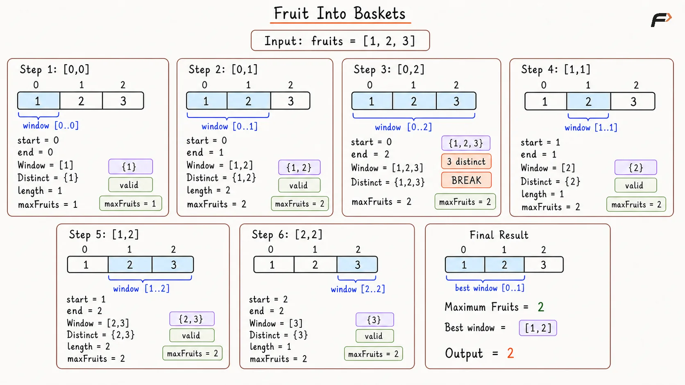
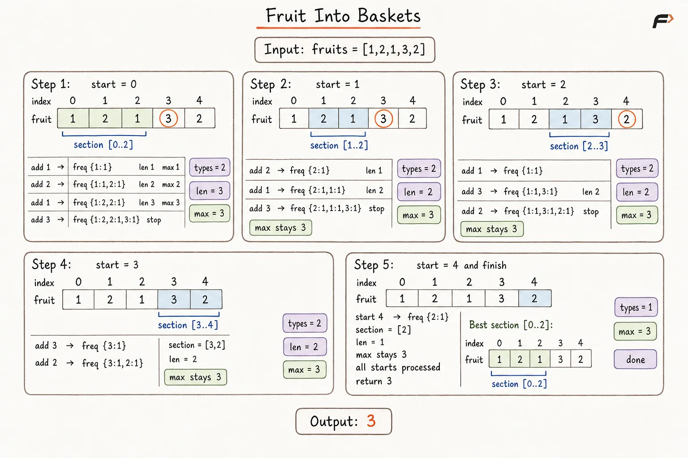
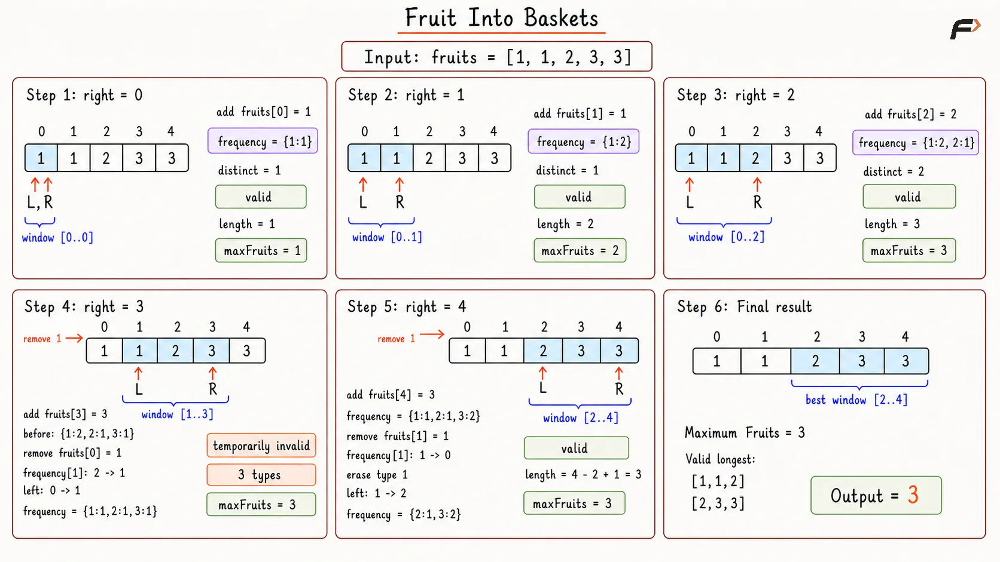

Fruit Into Baskets: Longest Subarray with Two Fruit Types
Given an integer array fruits, where fruits[i] represents the type of fruit on the ith tree, return the maximum number of fruits you can collect.
You have two baskets, and each basket can hold only one type of fruit.
You must pick fruits from a continuous section of trees.
Return the length of the longest continuous subarray that contains at most two distinct fruit types.
Example 1
Input: fruits = [1, 2, 1]
Output: 3
Explanation: We can collect all fruits because there are only two fruit types: 1 and 2.
Example 2
Input: fruits = [0, 1, 2, 2]
Output: 3
Explanation: The longest valid section is [1, 2, 2], which contains only two fruit types.
Example 3
Input: fruits = [1, 2, 3, 2, 2]
Output: 4
Explanation: The longest valid section is [2, 3, 2, 2], which contains only two fruit types.
Brute Force Approach
A valid collection can begin and end at any pair of tree positions. Therefore, every possible continuous section must receive examination.
For each selected section, a fresh set records distinct fruit types. A section remains valid when the set contains at most two types. Complete checking guarantees the correct answer, but repeated scanning of overlapping sections creates considerable extra work.
Algorithm
Store the array size in
nand return0whenn == 0, because no fruit can be collected from an empty array.Initialize
maxFruits = 0to store the longest valid section found so far.Select every
startindex and consider eachendfromstartonward so every possible continuous section can be examined.For every selected range
fruits[start...end], use a fresh set and scan the range to count its distinct fruit types.If the set grows beyond two types, break the current
endtraversal, because every longer section beginning at the samestartwill still contain those three fruit types.Otherwise, update
maxFruitswithend - start + 1, then return it after all starting positions are processed.
Dry Run

Fruit Into Baskets Brute Force Approach Dry Run.png
Solution
#include <bits/stdc++.h>
using namespace std;
class Solution {
public:
// Finds the longest valid section by checking every possible range.
int totalFruit(vector<int>& fruits) {
int n = fruits.size();
int maxFruits = 0;
// Try every tree as the beginning of a collection.
for (int start = 0; start < n; start++) {
// Try every possible ending position for the current start.
for (int end = start; end < n; end++) {
unordered_set<int> types;
// Count distinct fruit types inside the selected range.
for (int i = start; i <= end; i++) {
types.insert(fruits[i]);
// More than two types makes this range invalid.
if (types.size() > 2) {
break;
}
}
// Longer ranges from this start will also remain invalid.
if (types.size() > 2) {
break;
}
maxFruits = max(
maxFruits,
end - start + 1
);
}
}
return maxFruits;
}
};
int main() {
vector<int> fruits = {1, 2, 1, 2, 3};
Solution solution;
cout << solution.totalFruit(fruits) << endl;
return 0;
}Complexity Analysis
Time Complexity: O(N³), where N represents the array size. O(N²) continuous sections exist, and validation of one section may scan up to N elements.
Space Complexity: O(1), because the validation set stores at most three fruit types before detecting an invalid section. The basket limit remains fixed at two.
Better Approach
The Brute Force Approach creates a section first and scans the complete section afterward. A better method builds each section gradually and remembers fruit frequencies during expansion.
For every starting index, the end index moves toward the right while a frequency map tracks fruit types already included. Expansion stops immediately after a third type appears because every longer section from the same start will still contain at least three types.
Algorithm
Store the array size in n and return 0 when n equals 0.
Initialize maxFruits with 0 for storing the best valid length found so far.
Select every start index and create a fresh frequency map, because each new starting position represents an independent growing section.
Move end from start toward the final index and increase the frequency of
fruits[end]after adding the current fruit.Stop expansion when the map contains more than two fruit types, because every longer section from the same start will remain invalid.
Update maxFruits with
end - start + 1for every valid expansion, then return maxFruits after processing all starting positions.
Dry Run

Fruit Into Baskets Better Approach Dry Run.png
Solution
#include <bits/stdc++.h>
using namespace std;
class Solution {
public:
// Finds the longest valid section by growing from every start.
int totalFruit(vector<int>& fruits) {
int n = fruits.size();
int maxFruits = 0;
// Try every tree as the beginning of a collection.
for (int start = 0; start < n; start++) {
unordered_map<int, int> frequency;
// Expand the section while at most two fruit types remain.
for (int end = start; end < n; end++) {
frequency[fruits[end]]++;
// A third type makes every later extension invalid.
if (frequency.size() > 2) {
break;
}
maxFruits = max(
maxFruits,
end - start + 1
);
}
}
return maxFruits;
}
};
int main() {
vector<int> fruits = {1, 2, 1, 2, 3};
Solution solution;
cout << solution.totalFruit(fruits) << endl;
return 0;
}Complexity Analysis
Time Complexity: O(N²), where N represents the array size. Expansion from every starting index may process many later elements before a third fruit type appears.
Space Complexity: O(1), because the frequency map stores at most three fruit types before expansion stops.
Optimal Approach
Starting a fresh expansion from every index repeats earlier work. A sliding window keeps one active section and allows both boundaries to move only forward.
The right pointer adds fruits to the section. After a third type appears, a single left-side fruit is removed during the same iteration. A single if condition may leave the window temporarily invalid, but an invalid window never grows beyond the best valid length because one fruit enters and one fruit leaves together. The answer changes only after the window contains at most two fruit types again.
Algorithm
Initialize left and maxFruits with 0, and create a frequency map for tracking fruit counts inside the current window.
Move right from 0 to
n - 1and increase the frequency offruits[right], because the current fruit enters the window.When the map contains more than two fruit types, decrease the frequency of
fruits[left], erase a zero-frequency entry, and move left one position forward.Allow temporary invalidity after the single left movement; equal addition and removal keep the current window length from increasing during an invalid state.
Update maxFruits with
right - left + 1only when the map contains at most two fruit types.Return maxFruits after the right pointer processes every tree.
Dry Run

Fruit Into Baskets Optimal Approach Dry Run.png
Solution
#include <bits/stdc++.h>
using namespace std;
class Solution {
public:
// Finds the longest valid section using one forward sliding window.
int totalFruit(vector<int>& fruits) {
unordered_map<int, int> frequency;
int left = 0;
int maxFruits = 0;
// Expand the window by adding each fruit from the right.
for (int right = 0; right < fruits.size(); right++) {
frequency[fruits[right]]++;
// Remove one left fruit when more than two types are present.
if (frequency.size() > 2) {
frequency[fruits[left]]--;
// Remove a type after its final fruit leaves the window.
if (frequency[fruits[left]] == 0) {
frequency.erase(fruits[left]);
}
left++;
}
// Only valid windows can contribute to the final answer.
if (frequency.size() <= 2) {
maxFruits = max(
maxFruits,
right - left + 1
);
}
}
return maxFruits;
}
};
int main() {
vector<int> fruits = {1, 2, 1, 2, 3};
Solution solution;
cout << solution.totalFruit(fruits) << endl;
return 0;
}Complexity Analysis
Time Complexity: O(N), where N represents the array size. The right pointer processes every fruit once, while the left pointer moves only forward.
Space Complexity: O(N) in the worst case for the single-if variant. Temporary invalid windows may retain more than two fruit types inside the frequency map. A standard while-based shrink keeps the map bounded by the basket limit and uses O(1) auxiliary space for two baskets.
FAQS
Q1. How does the solution change when K baskets are available?
Replace the limit of two distinct fruit types with K. Every valid window must contain at most K distinct types.
Q2. Why does the Brute Force Approach require O(N³) time?
O(N²) continuous sections exist, and a separate scan may require O(N) time for validating one selected section.
Q3. Why can Better Approach expansion stop after a third type appears?
Every longer section from the same start retains all three existing fruit types, so no later extension can become valid.
Q4. Why is a frequency map required in the Optimal Approach?
Fruit frequencies determine whether a fruit type still remains after left-boundary removal. A zero frequency allows complete removal of the corresponding map entry.
Q5. Why is a single if condition safe for the answer?
An invalid iteration adds one fruit and removes one fruit, so invalid window length cannot increase. maxFruits receives updates only from valid windows.
Q6. What result is produced for an empty fruits array?
No tree exists, so the maximum collectable fruit count equals 0.